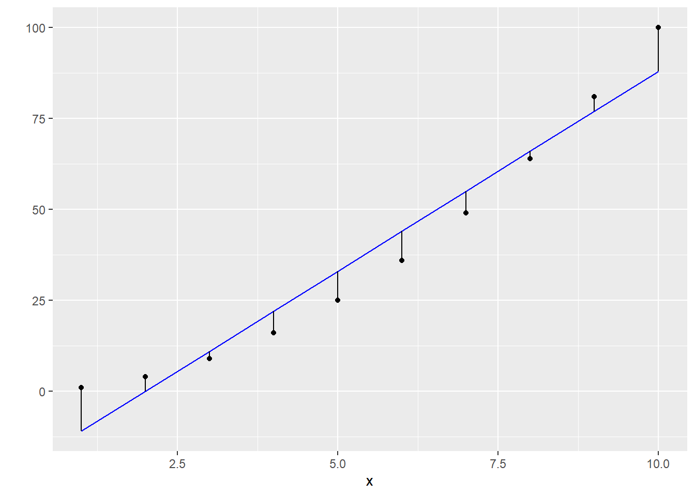
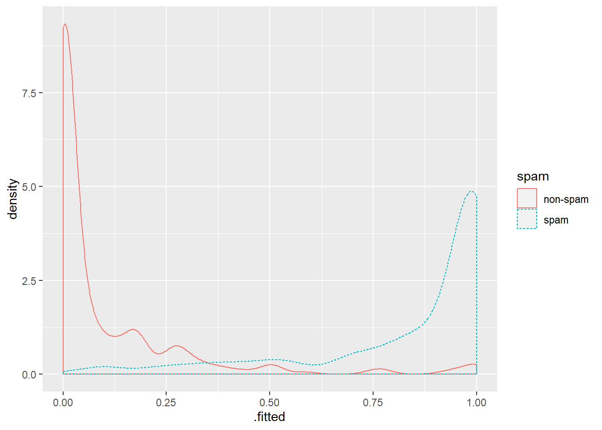
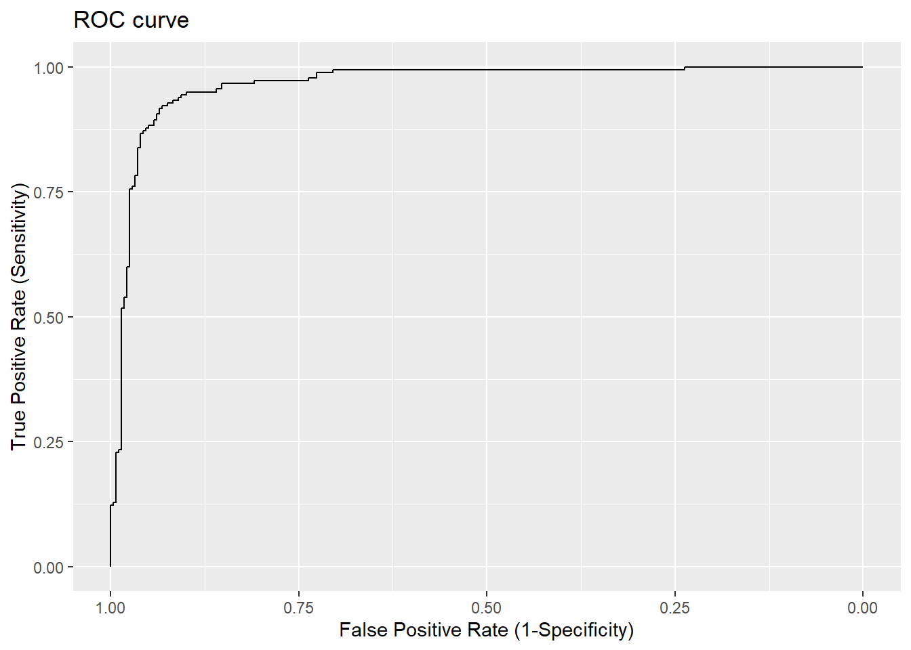
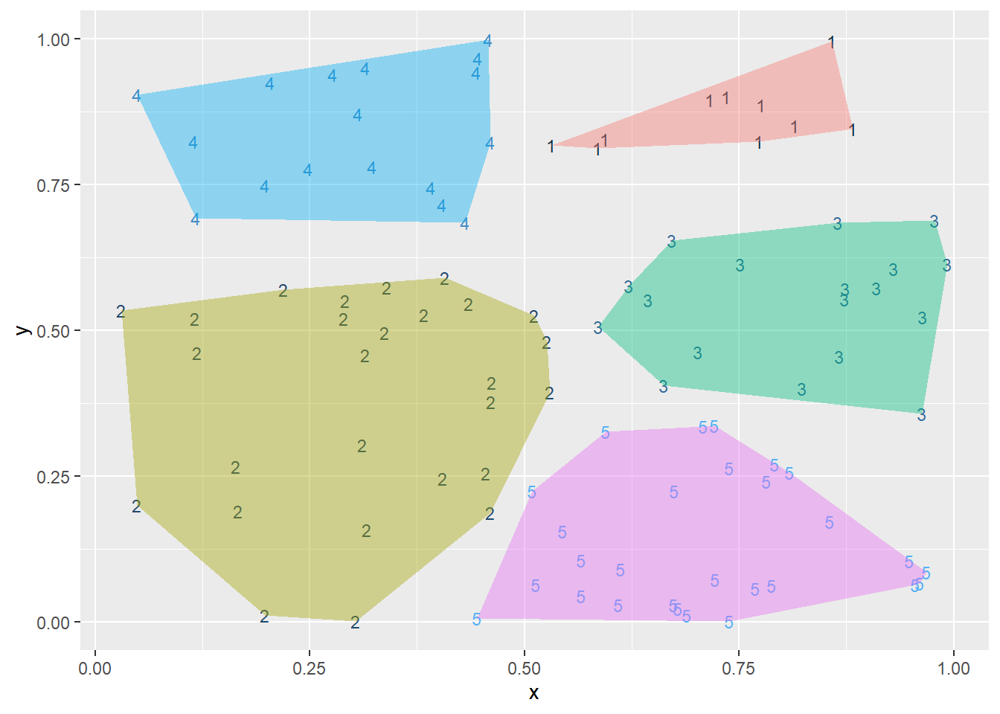

Chapter 2 Choosing and evaluating models
2.1 Evaluating models: classification
Building and applying a logistic regression spam model
set.seed(123)
library(tidyverse, warn.conflicts = FALSE)
library(tidymodels, warn.conflicts = FALSE)Using logistic regression to classify emails into spam or non-spam:
# reading the file containing spam data
spamD <- readr::read_tsv(
"https://raw.githubusercontent.com/WinVector/zmPDSwR/master/Spambase/spamD.tsv"
)## Parsed with column specification:
## cols(
## .default = col_double(),
## spam = col_character()
## )## See spec(...) for full column specifications.# creating training and testing datasets
spamTrain <- dplyr::filter(.data = spamD, rgroup >= 10)
spamTest <- dplyr::filter(.data = spamD, rgroup < 10)
# training the model
spamModel <- stats::glm(
formula = spam == "spam" ~ .,
family = stats::binomial(link = "logit"),
data = dplyr::select(spamTrain, -rgroup)
)## Warning: glm.fit: fitted probabilities numerically 0 or 1 occurred# looking at the result
broom::tidy(spamModel)## # A tibble: 58 x 5
## term estimate std.error statistic p.value
## <chr> <dbl> <dbl> <dbl> <dbl>
## 1 (Intercept) -1.62 0.151 -10.7 1.24e-26
## 2 word.freq.make -0.327 0.237 -1.38 1.68e- 1
## 3 word.freq.address -0.155 0.0771 -2.00 4.51e- 2
## 4 word.freq.all 0.149 0.123 1.22 2.23e- 1
## 5 word.freq.3d 2.19 1.56 1.40 1.60e- 1
## 6 word.freq.our 0.476 0.102 4.68 2.91e- 6
## 7 word.freq.over 0.744 0.252 2.95 3.13e- 3
## 8 word.freq.remove 2.34 0.349 6.70 2.08e-11
## 9 word.freq.internet 0.801 0.220 3.63 2.83e- 4
## 10 word.freq.order 0.645 0.300 2.15 3.14e- 2
## # ... with 48 more rows# looking at the model summary
broom::glance(spamModel)## # A tibble: 1 x 7
## null.deviance df.null logLik AIC BIC deviance df.residual
## <dbl> <int> <dbl> <dbl> <dbl> <dbl> <int>
## 1 5556. 4142 -807. 1730. 2097. 1614. 4085# with predicted response on training data
spamTrain <- broom::augment(
x = spamModel,
newdata = spamTrain,
type.predict = "response"
)
# with predicted response on test data
spamTest <- broom::augment(
x = spamModel,
newdata = spamTest,
type.predict = "response"
)
# performance with the training data
train_perform <- table(y = spamTrain$spam, glmPred = spamTrain$.fitted > 0.5)
colnames(train_perform) <- c("non-spam", "spam")
# looking at performance measures
caret::confusionMatrix(train_perform)## Warning: replacing previous import 'ggplot2::empty' by 'plyr::empty' when
## loading 'caret'## Confusion Matrix and Statistics
##
## glmPred
## y non-spam spam
## non-spam 2396 114
## spam 178 1455
##
## Accuracy : 0.9295
## 95% CI : (0.9213, 0.9371)
## No Information Rate : 0.6213
## P-Value [Acc > NIR] : < 2.2e-16
##
## Kappa : 0.8514
## Mcnemar's Test P-Value : 0.0002271
##
## Sensitivity : 0.9308
## Specificity : 0.9273
## Pos Pred Value : 0.9546
## Neg Pred Value : 0.8910
## Prevalence : 0.6213
## Detection Rate : 0.5783
## Detection Prevalence : 0.6058
## Balanced Accuracy : 0.9291
##
## 'Positive' Class : non-spam
## # performance with the test data
test_perform <- table(y = spamTest$spam, glmPred = spamTest$.fitted > 0.5)Looking at actual and predicted sample responses
sample <- spamTest[c(7, 35, 224, 327), c("spam", ".fitted")]
print(sample)## # A tibble: 4 x 2
## spam .fitted
## <chr> <dbl>
## 1 spam 0.990
## 2 spam 0.480
## 3 non-spam 0.000685
## 4 non-spam 0.000143Spam confusion matrix (to assess performance of the model)
# performance with the test data
(cM <- table(truth = spamTest$spam, prediction = spamTest$.fitted > 0.5))## prediction
## truth FALSE TRUE
## non-spam 264 14
## spam 22 158Assessing the performance
# chaning column names to align with rownames
colnames(cM) <- c("non-spam", "spam")
# looking at performance measures
caret::confusionMatrix(cM)## Confusion Matrix and Statistics
##
## prediction
## truth non-spam spam
## non-spam 264 14
## spam 22 158
##
## Accuracy : 0.9214
## 95% CI : (0.8928, 0.9443)
## No Information Rate : 0.6245
## P-Value [Acc > NIR] : <2e-16
##
## Kappa : 0.834
## Mcnemar's Test P-Value : 0.2433
##
## Sensitivity : 0.9231
## Specificity : 0.9186
## Pos Pred Value : 0.9496
## Neg Pred Value : 0.8778
## Prevalence : 0.6245
## Detection Rate : 0.5764
## Detection Prevalence : 0.6070
## Balanced Accuracy : 0.9208
##
## 'Positive' Class : non-spam
## Entering data by hand (example of a good spam filter at WinVectorLLC blog)
t <- as.table(matrix(data = c(288 - 1, 17, 1, 13882 - 17), nrow = 2, ncol = 2))
rownames(t) <- rownames(cM)
colnames(t) <- c("non-spam", "spam")
# looking at performance measures
caret::confusionMatrix(t)## Confusion Matrix and Statistics
##
## non-spam spam
## non-spam 287 1
## spam 17 13865
##
## Accuracy : 0.9987
## 95% CI : (0.998, 0.9992)
## No Information Rate : 0.9785
## P-Value [Acc > NIR] : < 2.2e-16
##
## Kappa : 0.9689
## Mcnemar's Test P-Value : 0.000407
##
## Sensitivity : 0.94408
## Specificity : 0.99993
## Pos Pred Value : 0.99653
## Neg Pred Value : 0.99878
## Prevalence : 0.02145
## Detection Rate : 0.02025
## Detection Prevalence : 0.02032
## Balanced Accuracy : 0.97200
##
## 'Positive' Class : non-spam
## Accuracy for our glm-based classifier was 92.14%, while it’s 99.87% for a good
classifier.
2.2 Evaluating models: scoring methods
Plotting residuals for evaluating scoring methods
# making a dataframe
d <- data.frame(y = (1:10)^2, x = 1:10)
# augmented dataframe for a linear model
d <- broom::augment(
x = stats::lm(y ~ x, data = d),
newdata = d
)
# plot
ggplot(data = d) +
geom_point(aes(x = x, y = y)) +
geom_line(aes(x = x, y = .fitted), color = "blue") +
geom_segment(aes(x = x, y = .fitted, yend = y, xend = x)) +
scale_y_continuous("")
2.3 Evaluating models: probability estimation
Double density plot for evaluating probability methods
ggplot(data = spamTest) +
geom_density(aes(x = .fitted, color = spam, linetype = spam))
Plotting the receiver operating characteristic (ROC) curve for evaluating probability methods
suppressPackageStartupMessages(library(pROC))
# AUC
(roc_object <- pROC::roc(response = spamTest$spam, predictor = spamTest$.fitted))##
## Call:
## roc.default(response = spamTest$spam, predictor = spamTest$.fitted)
##
## Data: spamTest$.fitted in 278 controls (spamTest$spam non-spam) < 180 cases (spamTest$spam spam).
## Area under the curve: 0.966# plot with ggplot
pROC::ggroc(roc_object) +
labs(
title = "ROC curve",
x = "False Positive Rate (1-Specificity)",
y = "True Positive Rate (Sensitivity)"
)
Calculating log likelihood
# model log likelihood the model assigns to the test data
sum(base::ifelse(
test = spamTest$spam == "spam",
yes = log(spamTest$.fitted),
no = log(1 - spamTest$.fitted)
))## [1] -134.9478# log likelihood rescaled by the number of data points
sum(base::ifelse(
test = spamTest$spam == "spam",
yes = log(spamTest$.fitted),
no = log(1 - spamTest$.fitted)
)) / dim(spamTest)[[1]]## [1] -0.2946458Computing the null model’s log likelihood (if the model is a good explanation, then the data should look likely (not implausible) under the model)
# null model
pNull <-
sum(base::ifelse(
test = spamTest$spam == "spam",
yes = 1,
no = 0
)) / dim(spamTest)[[1]]
# null model LL
sum(base::ifelse(
test = spamTest$spam == "spam",
yes = 1,
no = 0
)) * log(pNull) +
sum(base::ifelse(
test = spamTest$spam == "spam",
yes = 0,
no = 1
)) * log(1 - pNull)## [1] -306.8952Calculating entropy and conditional entropy
suppressPackageStartupMessages(library(DescTools))
DescTools::Entropy(x = table(spamTest$spam))## [1] 0.9667165# custom function to compute conditional entropy from the book
conditionalEntropy <- function(t) {
(sum(t[, 1]) * DescTools::Entropy(t[, 1]) +
sum(t[, 2]) * DescTools::Entropy(t[, 2])) / sum(t)
}
print(conditionalEntropy(cM))## [1] 0.3971897# package function to do the same
infotheo::condentropy(
X = spamTest$.fitted > 0.5,
Y = spamTest$spam,
method = "emp"
)## [1] 0.2670755# not sure why the different results2.4 Evaluating models: clustering
Clustering random data in the plane
set.seed(32297)
d <- tibble::as_tibble(data.frame(x = runif(100), y = runif(100)))
clus <- stats::kmeans(x = d, centers = 5)
# getting cluster assignment as a column (currently, this doesn't work)
# d <- broom::augment(x = clus, data = d)
# cluster assignment column
d$cluster <- clus$cluster
# calculating the size of each cluster
table(d$cluster)##
## 1 2 3 4 5
## 14 24 16 19 27Plotting our clusters
library(grDevices)
library(ggplot2)
# custom function for computing coordinates for drawing polygons
# `chull` function computes the subset of points which lie on the convex hull of
# the set of points specified
poly_coords <- function(c) {
f <- subset(d, cluster == c)
f[grDevices::chull(f), ]
}
# dataframe with coordinates
h <- purrr::map_dfr(.x = unique(clus$cluster),
.f = ~ poly_coords(c = .))
# plot
ggplot() +
geom_text(data = d,
aes(
label = cluster,
x = x,
y = y,
color = cluster
),
size = 3) +
geom_polygon(
data = h,
aes(
x = x,
y = y,
group = cluster,
fill = as.factor(cluster)
),
alpha = 0.4,
linetype = 0
) +
theme(legend.position = "none")
Calculating the typical distance between items in every pair of clusters
# setup
library(reshape2)##
## Attaching package: 'reshape2'## The following object is masked from 'package:tidyr':
##
## smithsset.seed(32297)
# data
d <- data.frame(x = runif(100), y = runif(100))
clus <- kmeans(d, centers = 5)
d$cluster <- clus$cluster
n <- dim(d)[[1]]
pairs <- data.frame(
ca = as.vector(outer(1:n, 1:n, function(a, b) d[a, "cluster"])),
cb = as.vector(outer(1:n, 1:n, function(a, b) d[b, "cluster"])),
dist = as.vector(outer(1:n, 1:n, function(a, b)
sqrt((d[a, "x"] - d[b, "x"])^2 + (d[a, "y"] - d[b, "y"])^2)))
)
# mean distances between clusters
reshape2::dcast(
data = pairs,
formula = ca ~ cb,
value.var = "dist",
fun.aggregate = mean
)## ca 1 2 3 4 5
## 1 1 0.2455532 0.4879134 0.4333400 0.7657341 0.5652964
## 2 2 0.4879134 0.2093167 0.3963179 0.6458058 0.7929075
## 3 3 0.4333400 0.3963179 0.1822481 0.4051769 0.4727933
## 4 4 0.7657341 0.6458058 0.4051769 0.2274158 0.5610172
## 5 5 0.5652964 0.7929075 0.4727933 0.5610172 0.2633348